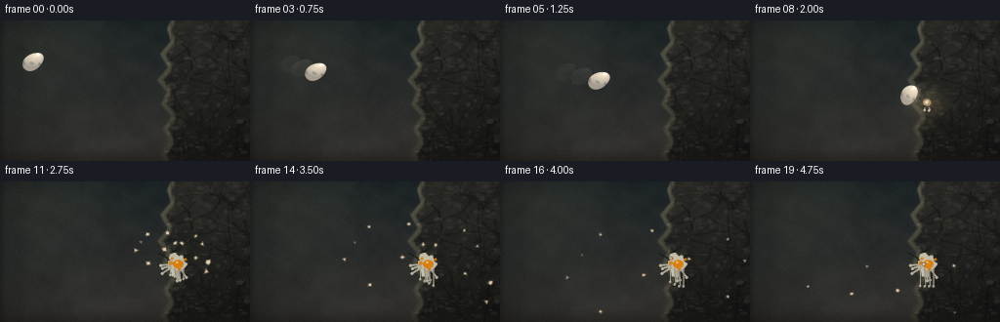
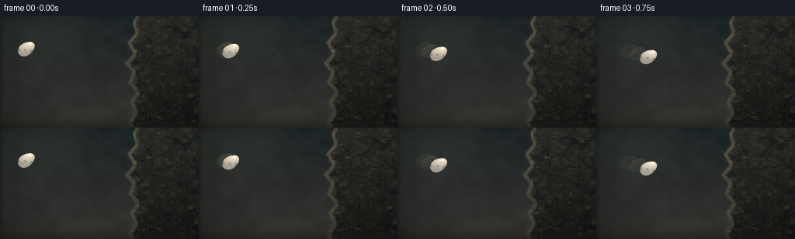
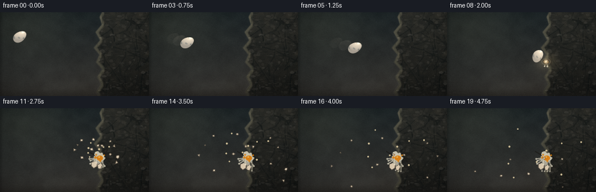
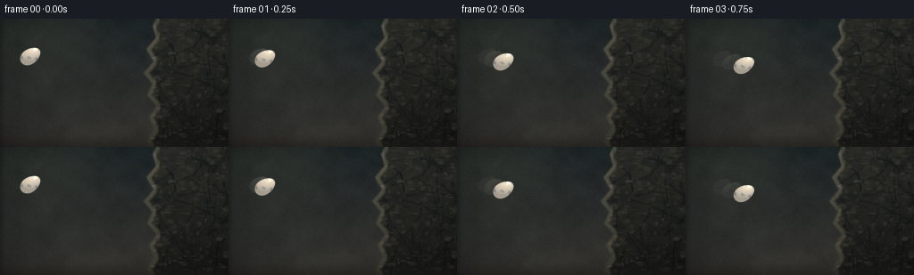

CODING AGENTS AS PIXEL WORLD MODELS
traex/DeepSeek-V4.1-Flash · phygen_131
点击播放 · 原生 RGB 像素
逐轮保存的候选
回放视频、检查图与代码变化。
每份候选均可单独播放。实际图片检查记录在下方工具轨迹中。
候选 01播放与检查图
点击播放 · 原生 RGB 像素


展开代码变化
--- 上一保存版本
+++ 本次保存版本
@@ -0,0 +1,517 @@
+from __future__ import annotations
+
+import math
+from pathlib import Path
+
+import cv2
+import numpy as np
+from PIL import Image, ImageDraw, ImageFilter
+
+import artifact_io
+
+
+WIDTH = 256
+HEIGHT = 144
+FRAMES = 20
+FPS = 4.0
+SS = 4
+RW = WIDTH * SS
+RH = HEIGHT * SS
+CASE_DIR = Path(__file__).resolve().parent
+
+
+def smooth_noise(rng: np.random.Generator, scale: int, octaves: int = 1) -> np.ndarray:
+ result = np.zeros((RH, RW), dtype=np.float32)
+ weight_sum = 0.0
+ weight = 1.0
+ for octave in range(octaves):
+ current_scale = max(2, scale >> octave)
+ small = rng.random(
+ (max(3, RH // current_scale + 3), max(3, RW // current_scale + 3)),
+ dtype=np.float32,
+ )
+ large = cv2.resize(small, (RW, RH), interpolation=cv2.INTER_CUBIC)
+ result += weight * large
+ weight_sum += weight
+ weight *= 0.52
+ result /= weight_sum
+ result -= float(result.min())
+ result /= max(float(result.max()), 1e-6)
+ return result
+
+
+def rgba_layer() -> tuple[Image.Image, ImageDraw.ImageDraw]:
+ layer = Image.new("RGBA", (RW, RH), (0, 0, 0, 0))
+ return layer, ImageDraw.Draw(layer, "RGBA")
+
+
+def composite(canvas: np.ndarray, layer: Image.Image) -> np.ndarray:
+ arr = np.asarray(layer, dtype=np.float32)
+ alpha = arr[:, :, 3:4] / 255.0
+ return canvas * (1.0 - alpha) + arr[:, :, :3] * alpha
+
+
+def rock_boundary_points() -> list[tuple[int, int]]:
+ edge = [
+ (180, -10),
+ (171, 8),
+ (175, 21),
+ (164, 34),
+ (172, 48),
+ (161, 61),
+ (171, 73),
+ (165, 86),
+ (176, 98),
+ (167, 111),
+ (174, 124),
+ (165, 137),
+ (175, 154),
+ ]
+ points = [(x * SS, y * SS) for x, y in edge]
+ points.extend([(RW + 20, RH + 20), (RW + 20, -20)])
+ return points
+
+
+def build_background() -> np.ndarray:
+ rng = np.random.default_rng(131)
+ yy, xx = np.mgrid[0:RH, 0:RW].astype(np.float32)
+ xn = xx / (RW - 1)
+ yn = yy / (RH - 1)
+
+ top = np.array([18, 28, 33], dtype=np.float32)
+ bottom = np.array([57, 54, 48], dtype=np.float32)
+ t = np.clip(0.78 * yn + 0.22 * xn, 0, 1)[..., None]
+ canvas = top * (1.0 - t) + bottom * t
+
+ glow = np.exp(-(((xn - 0.08) / 0.42) ** 2 + ((yn - 0.04) / 0.48) ** 2))
+ canvas += glow[..., None] * np.array([21, 18, 10], dtype=np.float32)
+
+ cloud = smooth_noise(rng, 72, 4)
+ canvas += (cloud[..., None] - 0.5) * np.array([8, 9, 8], dtype=np.float32)
+
+ # A quiet, defocused back wall gives the flying egg a readable silhouette.
+ back, draw = rgba_layer()
+ for _ in range(14):
+ cx = int(rng.uniform(0.00, 0.72) * RW)
+ cy = int(rng.uniform(0.08, 0.92) * RH)
+ radius = int(rng.uniform(18, 85) * SS / 2)
+ value = int(rng.uniform(35, 68))
+ draw.ellipse(
+ (cx - radius, cy - radius, cx + radius, cy + radius),
+ fill=(value, value + 4, value + 5, int(rng.uniform(8, 18))),
+ )
+ back = back.filter(ImageFilter.GaussianBlur(28 * SS / 4))
+ canvas = composite(canvas, back)
+
+ rock_points = rock_boundary_points()
+ mask_img = Image.new("L", (RW, RH), 0)
+ ImageDraw.Draw(mask_img).polygon(rock_points, fill=255)
+ rock_mask = np.asarray(mask_img, dtype=np.float32) / 255.0
+
+ height = (
+ 0.48 * smooth_noise(rng, 56, 4)
+ + 0.32 * smooth_noise(rng, 20, 3)
+ + 0.20 * smooth_noise(rng, 7, 2)
+ )
+ height = cv2.GaussianBlur(height, (0, 0), 1.2 * SS)
+ gx = cv2.Sobel(height, cv2.CV_32F, 1, 0, ksize=3)
+ gy = cv2.Sobel(height, cv2.CV_32F, 0, 1, ksize=3)
+ relief = np.clip(-0.62 * gx - 0.84 * gy, -1.2, 1.2)
+ relief = cv2.GaussianBlur(relief, (0, 0), 0.7 * SS)
+
+ cool = np.array([33, 42, 43], dtype=np.float32)
+ warm = np.array([104, 98, 82], dtype=np.float32)
+ tint = np.clip(0.16 + 0.62 * height + 0.20 * relief, 0, 1)[..., None]
+ rock = cool * (1.0 - tint) + warm * tint
+ rock += relief[..., None] * np.array([42, 39, 31], dtype=np.float32)
+
+ vertical = np.clip(0.44 + 0.38 * (1.0 - yn), 0, 1)[..., None]
+ rock *= vertical
+ grain = rng.normal(0.0, 4.0, (RH, RW, 1)).astype(np.float32)
+ rock += grain
+ canvas = canvas * (1.0 - rock_mask[..., None]) + rock * rock_mask[..., None]
+
+ # Fracture planes and veins are clipped to the stone silhouette.
+ cracks, draw = rgba_layer()
+ for _ in range(34):
+ x = int(rng.uniform(0.66, 1.0) * RW)
+ y = int(rng.uniform(0.02, 0.98) * RH)
+ pts = [(x, y)]
+ angle = rng.uniform(-1.8, 1.8)
+ for _segment in range(int(rng.integers(2, 7))):
+ length = rng.uniform(7, 29) * SS
+ angle += rng.normal(0.0, 0.38)
+ x += int(math.cos(angle) * length)
+ y += int(math.sin(angle) * length)
+ pts.append((x, y))
+ width = int(rng.uniform(1.0, 3.2) * SS)
+ draw.line(pts, fill=(14, 20, 20, int(rng.uniform(65, 125))), width=width)
+ if len(pts) > 2:
+ shifted = [(px + 2 * SS, py - SS) for px, py in pts[1:]]
+ draw.line(shifted, fill=(143, 135, 112, int(rng.uniform(12, 30))), width=max(1, SS // 2))
+ cracks_arr = np.asarray(cracks, dtype=np.float32)
+ cracks_arr[:, :, 3] *= rock_mask
+ canvas = composite(canvas, Image.fromarray(cracks_arr.astype(np.uint8), "RGBA"))
+
+ chips, draw = rgba_layer()
+ for _ in range(220):
+ x = int(rng.uniform(0.64, 1.0) * RW)
+ y = int(rng.uniform(0.0, 1.0) * RH)
+ if rock_mask[min(RH - 1, y), min(RW - 1, x)] < 0.5:
+ continue
+ rx = int(rng.uniform(0.6, 4.5) * SS)
+ ry = int(rng.uniform(0.4, 2.6) * SS)
+ light = int(rng.uniform(105, 175))
+ draw.ellipse(
+ (x - rx, y - ry, x + rx, y + ry),
+ fill=(light, light - 5, light - 18, int(rng.uniform(12, 48))),
+ )
+ canvas = composite(canvas, chips)
+
+ # Bevel the exposed left edge and add a dark contact side.
+ erode = cv2.erode(rock_mask, np.ones((7 * SS, 7 * SS), np.uint8))
+ edge = np.clip(rock_mask - erode, 0, 1)
+ edge = cv2.GaussianBlur(edge, (0, 0), 0.8 * SS)
+ canvas += edge[..., None] * np.array([38, 36, 27], dtype=np.float32)
+ shadow = cv2.GaussianBlur(np.roll(rock_mask, 3 * SS, axis=1), (0, 0), 2.0 * SS)
+ canvas *= (1.0 - 0.20 * shadow[..., None])
+
+ # Foreground grounding band.
+ floor_y = int(0.91 * RH)
+ floor_t = np.clip((yy - floor_y) / (RH - floor_y), 0, 1)[..., None]
+ floor_color = np.array([32, 31, 28], dtype=np.float32)
+ canvas = canvas * (1.0 - 0.52 * floor_t) + floor_color * (0.52 * floor_t)
+
+ # Broad cinematic vignette, kept gentle enough to preserve rock texture.
+ radius = ((xn - 0.52) / 0.70) ** 2 + ((yn - 0.48) / 0.78) ** 2
+ canvas *= np.clip(1.08 - 0.36 * radius, 0.50, 1.0)[..., None]
+ return np.clip(canvas, 0, 255)
+
+
+def egg_shading(
+ canvas: np.ndarray,
+ cx: float,
+ cy: float,
+ angle: float,
+ a: float,
+ b: float,
+ squash: tuple[float, float] = (1.0, 1.0),
+ opacity: float = 1.0,
+ cracks: bool = False,
+) -> np.ndarray:
+ cx *= SS
+ cy *= SS
+ a *= SS
+ b *= SS
+ pad = int(max(a, b) * 2.2)
+ x0 = max(0, int(cx) - pad)
+ y0 = max(0, int(cy) - pad)
+ x1 = min(RW, int(cx) + pad + 1)
+ y1 = min(RH, int(cy) + pad + 1)
+ yy, xx = np.mgrid[y0:y1, x0:x1].astype(np.float32)
+ dx = xx - cx
+ dy = yy - cy
+
+ # World-space impact squash, then inverse rotation into the egg frame.
+ dx /= squash[0]
+ dy /= squash[1]
+ ca = math.cos(angle)
+ sa = math.sin(angle)
+ u = ca * dx + sa * dy
+ v = -sa * dx + ca * dy
+ width = a * (1.0 + 0.13 * v / b)
+ q = (u / np.maximum(width, 1.0)) ** 2 + (v / b) ** 2
+ alpha = np.clip((1.0 - q) * b * 0.33, 0.0, 1.0)
+
+ nx = np.clip(u / np.maximum(width, 1.0), -1, 1)
+ ny = np.clip(v / b, -1, 1)
+ nz = np.sqrt(np.clip(1.0 - nx * nx - ny * ny, 0.0, 1.0))
+ light = np.array([-0.52, -0.66, 0.55], dtype=np.float32)
+ light /= np.linalg.norm(light)
+ diffuse = np.clip(nx * light[0] + ny * light[1] + nz * light[2], 0, 1)
+ rim = np.clip((-nx * 0.72 + ny * 0.55 + nz * 0.18), 0, 1)
+
+ base = np.array([232, 221, 197], dtype=np.float32)
+ shadow = np.array([129, 126, 118], dtype=np.float32)
+ tone = (0.32 + 0.72 * diffuse)[..., None]
+ rgb = shadow * (1.0 - tone) + base * tone
+ rgb += (rim**10)[..., None] * np.array([44, 38, 26], dtype=np.float32)
+ spec = np.clip(diffuse, 0, 1) ** 25
+ rgb += spec[..., None] * np.array([65, 62, 51], dtype=np.float32)
+
+ # Fine, irregular shell mottling.
+ mottle = (
+ np.sin(u * 0.17 + np.sin(v * 0.11) * 2.1)
+ + np.sin(v * 0.21 - u * 0.04)
+ + np.sin((u + v) * 0.09)
+ )
+ speckle = np.clip((mottle - 1.55) * 5.0, 0, 1)
+ rgb -= speckle[..., None] * np.array([38, 30, 23], dtype=np.float32)
+
+ edge = np.clip((q - 0.91) * 9.0, 0, 1)
+ rgb = rgb * (1.0 - 0.38 * edge[..., None])
+ alpha *= opacity
+
+ region = canvas[y0:y1, x0:x1]
+ canvas[y0:y1, x0:x1] = region * (1.0 - alpha[..., None]) + rgb * alpha[..., None]
+
+ if cracks:
+ local_pts = [(-0.60, -0.15), (-0.18, 0.02), (0.26, -0.04), (0.63, 0.16)]
+ world = []
+ for lu, lv in local_pts:
+ wx = cx + ca * lu * a - sa * lv * b
+ wy = cy + sa * lu * a + ca * lv * b
+ world.append((int(wx), int(wy)))
+ crack_layer, draw = rgba_layer()
+ draw.line(world, fill=(55, 50, 44, 210), width=2 * SS)
+ draw.line([(world[1][0], world[1][1]), (world[1][0] - 2 * SS, world[1][1] + 5 * SS)],
+ fill=(55, 50, 44, 190), width=SS)
+ arr = np.asarray(crack_layer, dtype=np.float32)
+ arr[y0:y1, x0:x1, 3] *= alpha
+ canvas = composite(canvas, Image.fromarray(arr.astype(np.uint8), "RGBA"))
+ return canvas
+
+
+def egg_position(frame: int) -> tuple[float, float, float]:
+ impact_frame = 8
+ if frame <= impact_frame:
+ t = frame / impact_frame
+ eased = t**1.38
+ x = 34.0 + (163.0 - 34.0) * eased
+ y = 42.0 + (76.0 - 42.0) * eased + 1.6 * math.sin(math.pi * t)
+ angle = math.radians(56.0 + 11.0 * t)
+ else:
+ x, y = 163.0, 76.0
+ angle = math.radians(67.0)
+ return x, y, angle
+
+
+def draw_motion(canvas: np.ndarray, frame: int) -> np.ndarray:
+ if frame >= 8:
+ return canvas
+ x, y, angle = egg_position(frame)
+ previous = [egg_position(max(0, frame - lag)) for lag in (1, 2)]
+ for index, (px, py, pangle) in enumerate(previous):
+ alpha = 0.075 if index == 0 else 0.038
+ egg_shading(canvas, px, py, pangle, 8.0, 11.8, opacity=alpha)
+
+ if frame >= 3:
+ trail, draw = rgba_layer()
+ speed = 7.0 + frame * 1.6
+ for lane in range(9):
+ yy = (y + (lane - 4) * 1.8) * SS
+ length = (speed + lane % 3 * 3.0) * SS
+ alpha = int(26 + 3 * frame)
+ draw.line(
+ [(x * SS - length, yy + lane * SS / 5), (x * SS - 3 * SS, yy)],
+ fill=(225, 214, 189, alpha),
+ width=max(1, SS // 2),
+ )
+ trail = trail.filter(ImageFilter.GaussianBlur(1.2 * SS))
+ canvas = composite(canvas, trail)
+ return canvas
+
+
+def impact_cracks(canvas: np.ndarray, age: float) -> np.ndarray:
+ if age < 0:
+ return canvas
+ rng = np.random.default_rng(884)
+ layer, draw = rgba_layer()
+ center = (181 * SS, 84 * SS)
+ for index in range(12):
+ angle = rng.uniform(-2.7, 1.1)
+ length = rng.uniform(8, 27) * SS * min(1.0, age * 8 + 0.45)
+ mid = (
+ center[0] + int(math.cos(angle) * length * 0.55),
+ center[1] + int(math.sin(angle) * length * 0.55 + rng.normal(0, 1.4) * SS),
+ )
+ end = (
+ center[0] + int(math.cos(angle) * length),
+ center[1] + int(math.sin(angle) * length),
+ )
+ draw.line([center, mid, end], fill=(27, 26, 23, 180), width=int(rng.uniform(1, 2.3) * SS))
+ return composite(canvas, layer)
+
+
+def draw_splat(canvas: np.ndarray, age: float) -> np.ndarray:
+ if age < 0:
+ return canvas
+ rng = np.random.default_rng(2319)
+ cx, cy = 181.0, 84.0
+ spread = 1.0 - math.exp(-age * 7.0)
+ settle = min(age, 2.0)
+
+ layer, draw = rgba_layer()
+ points = []
+ for index in range(30):
+ theta = 2 * math.pi * index / 30
+ radius_x = (7.0 + rng.uniform(-2.0, 4.0)) * spread
+ radius_y = (8.5 + rng.uniform(-2.0, 4.0)) * spread
+ if math.sin(theta) > 0.1:
+ radius_y += 3.0 * spread
+ points.append((
+ int((cx + math.cos(theta) * radius_x) * SS),
+ int((cy + math.sin(theta) * radius_y) * SS),
+ ))
+ draw.polygon(points, fill=(222, 218, 194, 215))
+ draw.line(points + [points[0]], fill=(244, 239, 210, 190), width=SS)
+
+ # Albumen tendrils and slow drips down the stone.
+ for index in range(6):
+ angle = rng.uniform(0.05, math.pi - 0.05)
+ length = rng.uniform(6, 13) * spread
+ start = (cx + math.cos(angle) * 6 * spread, cy + math.sin(angle) * 7 * spread)
+ end = (start[0] + math.cos(angle) * length, start[1] + math.sin(angle) * length)
+ draw.line(
+ [(int(start[0] * SS), int(start[1] * SS)), (int(end[0] * SS), int(end[1] * SS))],
+ fill=(225, 221, 197, 175),
+ width=int(2.1 * SS),
+ )
+ draw.ellipse(
+ (int(end[0] * SS - 1.5 * SS), int(end[1] * SS - 1.5 * SS),
+ int(end[0] * SS + 1.5 * SS), int(end[1] * SS + 1.5 * SS)),
+ fill=(232, 228, 203, 185),
+ )
+
+ drip_count = 2 if age < 0.6 else 4
+ for index in range(drip_count):
+ dx = cx + (index - (drip_count - 1) / 2) * 4.5
+ length = min(18.0, (2.5 + age * 5.5) * (1.0 + 0.2 * index))
+ draw.line(
+ [(int(dx * SS), int((cy + 5) * SS)), (int((dx + math.sin(index) * 1.2) * SS), int((cy + 5 + length) * SS))],
+ fill=(212, 207, 184, 155),
+ width=int((1.2 + 0.18 * index) * SS),
+ )
+ draw.ellipse(
+ (int((dx - 1.2) * SS), int((cy + 4 + length) * SS),
+ int((dx + 1.2) * SS), int((cy + 6.6 + length) * SS)),
+ fill=(223, 218, 193, 180),
+ )
+ canvas = composite(canvas, layer)
+
+ # The yolk remains a bright, glossy anchor after impact.
+ yolk_layer, draw = rgba_layer()
+ ycx = cx + 1.5 * spread
+ ycy = cy + 0.7 * spread
+ yr = 4.0 + 1.3 * spread
+ draw.ellipse(
+ (int((ycx - yr) * SS), int((ycy - yr * 0.82) * SS),
+ int((ycx + yr) * SS), int((ycy + yr * 0.82) * SS)),
+ fill=(211, 125, 20, 245),
+ )
+ draw.ellipse(
+ (int((ycx - yr * 0.46) * SS), int((ycy - yr * 0.55) * SS),
+ int((ycx + yr * 0.02) * SS), int((ycy - yr * 0.15) * SS)),
+ fill=(255, 199, 62, 155),
+ )
+ for index in range(4):
+ theta = rng.uniform(0, 2 * math.pi)
+ rr = rng.uniform(5.5, 10.0) * spread
+ px = ycx + math.cos(theta) * rr
+ py = ycy + math.sin(theta) * rr * 0.8
+ dr = rng.uniform(0.9, 2.2)
+ draw.ellipse(
+ (int((px - dr) * SS), int((py - dr) * SS), int((px + dr) * SS), int((py + dr) * SS)),
+ fill=(205, 123, 19, 220),
+ )
+ canvas = composite(canvas, yolk_layer)
+
+ # Shell fragments fan away from the contact and then fall under gravity.
+ t = min(age, 2.6)
+ for index in range(13):
+ theta = -math.pi * 0.93 + (index / 12.0) * math.pi * 0.96
+ speed = rng.uniform(22.0, 58.0)
+ vx = math.cos(theta) * speed - 8.0
+ vy = math.sin(theta) * speed - 7.0
+ px = cx + vx * t
+ py = cy + vy * t + 18.0 * t * t
+ if age > 1.15:
+ px += math.sin(age * 2.3 + index) * 0.8
+ py += (age - 1.15) * 6.0
+ if px < 2 or px > WIDTH - 2 or py > HEIGHT - 2:
+ continue
+ size = rng.uniform(1.8, 4.7) * max(0.58, 1.0 - 0.18 * t)
+ rotation = rng.uniform(0, 2 * math.pi) + t * rng.uniform(-3.0, 3.0)
+ polygon = []
+ sides = int(rng.integers(3, 6))
+ for side in range(sides):
+ a0 = rotation + 2 * math.pi * side / sides
+ rr = size * rng.uniform(0.65, 1.25)
+ polygon.append(((px + math.cos(a0) * rr) * SS, (py + math.sin(a0) * rr) * SS))
+ frag, fdraw = rgba_layer()
+ fdraw.polygon(polygon, fill=(225, 213, 187, 245))
+ fdraw.line(polygon + [polygon[0]], fill=(115, 102, 83, 190), width=SS)
+ canvas = composite(canvas, frag)
+
+ # A short-lived stone-dust puff sells the force of contact.
+ if age < 1.0:
+ dust, draw = rgba_layer()
+ dust_alpha = int(75 * (1.0 - age))
+ for _ in range(24):
+ theta = rng.uniform(-2.9, 1.2)
+ rr = rng.uniform(4, 25) * min(1.0, age * 7 + 0.2)
+ px = cx + math.cos(theta) * rr
+ py = cy + math.sin(theta) * rr * 0.7
+ radius = rng.uniform(0.8, 3.0) * SS
+ draw.ellipse(
+ (int(px * SS - radius), int(py * SS - radius),
+ int(px * SS + radius), int(py * SS + radius)),
+ fill=(156, 148, 127, dust_alpha),
+ )
+ dust = dust.filter(ImageFilter.GaussianBlur(1.5 * SS))
+ canvas = composite(canvas, dust)
+ return canvas
+
+
+def add_impact_flash(canvas: np.ndarray, frame: int) -> np.ndarray:
+ if frame not in (8, 9):
+ return canvas
+ strength = 0.36 if frame == 8 else 0.17
+ yy, xx = np.mgrid[0:RH, 0:RW].astype(np.float32)
+ glow = np.exp(-(((xx / SS - 181) / 17) ** 2 + ((yy / SS - 84) / 14) ** 2))
+ canvas += glow[..., None] * np.array([105, 91, 62], dtype=np.float32) * strength
+ return canvas
+
+
+def finish_frame(canvas: np.ndarray, frame: int) -> np.ndarray:
+ canvas = np.clip(canvas, 0, 255)
+ small = cv2.resize(canvas, (WIDTH, HEIGHT), interpolation=cv2.INTER_AREA)
+
+ # Subtle warm highlights and cool shadows.
+ rgb = small / 255.0
+ luminance = rgb @ np.array([0.2126, 0.7152, 0.0722], dtype=np.float32)
+ rgb = np.clip(rgb + (0.5 - luminance[..., None]) * 0.035, 0, 1)
+ rgb[..., 0] *= 1.015
+ rgb[..., 2] *= 1.008
+ rgb = np.clip((rgb - 0.5) * 1.035 + 0.5, 0, 1)
+
+ rng = np.random.default_rng(1000 + frame)
+ grain = rng.normal(0.0, 1.3, (HEIGHT, WIDTH, 1)).astype(np.float32)
+ rgb = np.clip(rgb * 255.0 + grain, 0, 255)
+ return rgb.astype(np.uint8)
+
+
+def render() -> np.ndarray:
+ background = build_background()
+ frames = []
+ for frame in range(FRAMES):
+ canvas = background.copy()
+ age = (frame - 8) / FPS
+ canvas = impact_cracks(canvas, age)
+ canvas = draw_splat(canvas, age)
+ canvas = draw_motion(canvas, frame)
+ if frame < 8:
+ x, y, angle = egg_position(frame)
+ egg_shading(canvas, x, y, angle, 8.2, 12.1)
+ elif frame == 8:
+ x, y, angle = egg_position(frame)
+ egg_shading(canvas, x, y, angle, 8.2, 12.1, squash=(0.78, 1.16), cracks=True)
+ canvas = add_impact_flash(canvas, frame)
+ frames.append(finish_frame(canvas, frame))
+ return np.stack(frames, axis=0)
+
+
+if __name__ == "__main__":
+ video_frames = render()
+ artifact_io.save(video_frames, CASE_DIR)
+ print(f"saved {video_frames.shape} frames to {CASE_DIR}")
候选 02播放与检查图
点击播放 · 原生 RGB 像素


展开代码变化
--- 上一保存版本
+++ 本次保存版本
@@ -17,6 +17,8 @@
SS = 4
RW = WIDTH * SS
RH = HEIGHT * SS
+IMPACT_X = 170.0
+IMPACT_Y = 85.0
CASE_DIR = Path(__file__).resolve().parent
@@ -277,11 +279,11 @@
if frame <= impact_frame:
t = frame / impact_frame
eased = t**1.38
- x = 34.0 + (163.0 - 34.0) * eased
- y = 42.0 + (76.0 - 42.0) * eased + 1.6 * math.sin(math.pi * t)
+ x = 34.0 + (156.0 - 34.0) * eased
+ y = 42.0 + (75.0 - 42.0) * eased + 1.6 * math.sin(math.pi * t)
angle = math.radians(56.0 + 11.0 * t)
else:
- x, y = 163.0, 76.0
+ x, y = 156.0, 75.0
angle = math.radians(67.0)
return x, y, angle
@@ -317,7 +319,7 @@
return canvas
rng = np.random.default_rng(884)
layer, draw = rgba_layer()
- center = (181 * SS, 84 * SS)
+ center = (int(IMPACT_X * SS), int(IMPACT_Y * SS))
for index in range(12):
angle = rng.uniform(-2.7, 1.1)
length = rng.uniform(8, 27) * SS * min(1.0, age * 8 + 0.45)
@@ -337,9 +339,8 @@
if age < 0:
return canvas
rng = np.random.default_rng(2319)
- cx, cy = 181.0, 84.0
+ cx, cy = IMPACT_X, IMPACT_Y
spread = 1.0 - math.exp(-age * 7.0)
- settle = min(age, 2.0)
layer, draw = rgba_layer()
points = []
@@ -388,6 +389,20 @@
fill=(223, 218, 193, 180),
)
canvas = composite(canvas, layer)
+
+ # A fast pressure ring makes the single contact frame legible at 4 fps.
+ if age < 0.8:
+ ring_layer, draw = rgba_layer()
+ radius = 8.0 + 31.0 * min(1.0, age / 0.7)
+ alpha = int(92 * max(0.0, 1.0 - age / 0.8))
+ draw.ellipse(
+ (int((cx - radius) * SS), int((cy - radius * 0.72) * SS),
+ int((cx + radius) * SS), int((cy + radius * 0.72) * SS)),
+ outline=(198, 184, 151, alpha),
+ width=int(1.6 * SS),
+ )
+ ring_layer = ring_layer.filter(ImageFilter.GaussianBlur(0.55 * SS))
+ canvas = composite(canvas, ring_layer)
# The yolk remains a bright, glossy anchor after impact.
yolk_layer, draw = rgba_layer()
@@ -443,6 +458,36 @@
fdraw.line(polygon + [polygon[0]], fill=(115, 102, 83, 190), width=SS)
canvas = composite(canvas, frag)
+ # Wet droplets lead the solid shards and catch the key light.
+ droplets, draw = rgba_layer()
+ for index in range(9):
+ theta = -math.pi * 0.86 + index * math.pi * 0.085
+ speed = 18.0 + 8.0 * (index % 4)
+ px = cx + math.cos(theta) * speed * t - 5.0 * t
+ py = cy + math.sin(theta) * speed * t + 8.0 * t * t
+ radius = (1.2 + 0.2 * (index % 3)) * SS
+ draw.ellipse(
+ (int(px * SS - radius), int(py * SS - radius),
+ int(px * SS + radius), int(py * SS + radius)),
+ fill=(230, 214, 169, 220),
+ )
+ canvas = composite(canvas, droplets)
+
+ # Two larger concave pieces settle below the wet impact site.
+ if age > 0.18:
+ shell_layer, draw = rgba_layer()
+ drop = min(5.0, (age - 0.18) * 4.0)
+ pieces = [
+ [(157, 91), (162, 89), (167, 92), (166, 98), (161, 101), (157, 97)],
+ [(166, 95), (171, 92), (174, 96), (171, 102), (167, 101)],
+ ]
+ for piece_index, piece in enumerate(pieces):
+ moved = [(int((x + piece_index * 1.5) * SS), int((y + drop) * SS)) for x, y in piece]
+ draw.polygon(moved, fill=(218, 204, 177, 245))
+ draw.line(moved + [moved[0]], fill=(91, 83, 71, 225), width=SS)
+ draw.line(moved[1:3], fill=(246, 234, 205, 170), width=SS)
+ canvas = composite(canvas, shell_layer)
+
# A short-lived stone-dust puff sells the force of contact.
if age < 1.0:
dust, draw = rgba_layer()
@@ -468,7 +513,7 @@
return canvas
strength = 0.36 if frame == 8 else 0.17
yy, xx = np.mgrid[0:RH, 0:RW].astype(np.float32)
- glow = np.exp(-(((xx / SS - 181) / 17) ** 2 + ((yy / SS - 84) / 14) ** 2))
+ glow = np.exp(-(((xx / SS - IMPACT_X) / 17) ** 2 + ((yy / SS - IMPACT_Y) / 14) ** 2))
canvas += glow[..., None] * np.array([105, 91, 62], dtype=np.float32) * strength
return canvas
@@ -502,10 +547,10 @@
canvas = draw_motion(canvas, frame)
if frame < 8:
x, y, angle = egg_position(frame)
- egg_shading(canvas, x, y, angle, 8.2, 12.1)
+ egg_shading(canvas, x, y, angle, 8.6, 12.7)
elif frame == 8:
x, y, angle = egg_position(frame)
- egg_shading(canvas, x, y, angle, 8.2, 12.1, squash=(0.78, 1.16), cracks=True)
+ egg_shading(canvas, x, y, angle, 8.6, 12.7, squash=(0.78, 1.16), cracks=True)
canvas = add_impact_flash(canvas, frame)
frames.append(finish_frame(canvas, frame))
return np.stack(frames, axis=0)
可观测工具轨迹
实际执行的命令与返回图片。
命令 1exit 0
/bin/bash -c "pwd && rg --files -g '"'!*.mp4'"' -g '"'!*.mov'"' | sed -n '1,120p'"
命令 2exit 0
/bin/bash -c "sed -n '1,240p' GENERATION_RULES.md"
命令 3exit 0
/bin/bash -c 'cat task_spec.json'
命令 4exit 0
/bin/bash -c 'cat prompt.txt'
命令 5exit 0
/bin/bash -c "ls -la && find . -maxdepth 2 -type f -printf '%p %s bytes\\n' | sort"
命令 6exit 0
/bin/bash -c "sed -n '1,260p' artifact_io.py"
命令 7exit 0
/bin/bash -c "sed -n '1,260p' player_template.html"
命令 8exit 0
/bin/bash -c "python - <<'PY'
import importlib.util
for m in ['numpy','PIL','cv2','imageio','imageio_ffmpeg','matplotlib']:
print(m, bool(importlib.util.find_spec(m)))
PY"命令 9exit 1
/bin/bash -c 'python generate.py'
命令 10exit 0
/bin/bash -c 'python generate.py'
命令 11exit 127
/bin/bash -c 'which chafa || true; which viu || true; which jp2 || true; file inspection.png frames/00.png frames/08.png frames/19.png'
命令 12exit 0
/bin/bash -c "python - <<'PY'
from PIL import Image
import numpy as np
for f in [0,2,4,6,7,8,9,10,12,15,19]:
a=np.asarray(Image.open(f'frames/{f:02d}.png')).astype(float)
print(f, 'mean',a.mean((0,1)).round(1), 'minmax',a.min(),a.max(),'dark%',round((a.mean(2)<25).mean()*100,1))
PY"命令 13exit 0
/bin/bash -c "python - <<'PY'
from PIL import Image,ImageDraw
import numpy as np
# Make a 2x nearest-neighbor inspection contact sheet for visual checks.
frames=[Image.open(f'frames/{i:02d}.png') for i in range(20)]
sheet=Image.new('RGB',(512*4,(288+24)*5),(22,24,28)); d=ImageDraw.Draw(sheet)
for i,im in enumerate(frames):
x=(i%4)*512; y=(i//4)*312
d.text((x+6,y+4),f'{i:02d} {i/4:.2f}s',fill='white')
sheet.paste(im.resize((512,288),Image.Resampling.NEAREST),(x,y+24))
sheet.save('.tmp/contact2x.png')
# Critical crops around flight and impact.
for i in [0,4,6,7,8,9,10,14,19]:
im=frames[i]
im.crop((12,22,218,126)).resize((824,416),Image.Resampling.NEAREST).save(f'.tmp/crop_{i:02d}.png')
PY
ls -lh inspection.png .tmp/contact2x.png frames/*.png | tail -5"命令 14exit 0
/bin/bash -c "python - <<'PY'
from PIL import Image,ImageEnhance
import numpy as np
for fi in [0,4,7,8,9,12,19]:
im=Image.open(f'frames/{fi:02d}.png').convert('RGB').resize((72,40),Image.Resampling.LANCZOS)
a=np.asarray(im).astype(np.float32)
# luminance and chroma-aware palette characters
lum=a@np.array([.2126,.7152,.0722])
chars=np.array(list(' .,:;irsXA253hMHGS#9B&@'))
lo,hi=np.percentile(lum,1),np.percentile(lum,99)
q=np.clip((lum-lo)/(hi-lo+1e-6),0,1)
print(f'\\nFRAME {fi:02d} luminance {lo:.0f}..{hi:.0f} mean {lum.mean():.0f}')
for row in q[::2]:
print(''.join(chars[(row*len(chars)).astype(int).clip(0,len(chars)-1)]))
PY"命令 15exit 0
/bin/bash -c "python - <<'PY'
from PIL import Image
import numpy as np
for i in range(20):
a=np.asarray(Image.open(f'frames/{i:02d}.png')).astype(float)
lum=a@np.array([.2126,.7152,.0722])
for th in [120,150,180,210]:
m=lum>th
if m.any():
ys,xs=np.where(m)
bbox=(xs.min(),ys.min(),xs.max(),ys.max())
else: bbox=None
if th==150: print(i, 'bright150',m.sum(),bbox,'max',round(lum.max()))
PY"命令 16exit 0
/bin/bash -c "python - <<'PY'
from PIL import Image
import numpy as np
for i in [0,2,4,6,7,8,9,10,12,16,19]:
a=np.asarray(Image.open(f'frames/{i:02d}.png')).astype(float)
lum=a@np.array([.2126,.7152,.0722])
print(i, 'max',lum.max().round(), 'p99.9',np.percentile(lum,99.9).round(), 'bright>180',(lum>180).sum(),'>210',(lum>210).sum())
PY"命令 17exit 0
/bin/bash -c "python - <<'PY'
from PIL import Image
import numpy as np
im=Image.open('frames/08.png').convert('RGB')
im.resize((1280,720),Image.Resampling.NEAREST).save('.tmp/frame08_5x.png')
# Approx color sampling around egg path and impact.
for i in [0,4,7,8,9,12,19]:
a=np.asarray(Image.open(f'frames/{i:02d}.png')).astype(float)
lum=a@np.array([.2126,.7152,.0722])
mask=lum>180
ys,xs=np.where(mask)
print(i,'center of highlights',round(xs.mean(),1),round(ys.mean(),1),'bbox',xs.min(),ys.min(),xs.max(),ys.max())
PY"命令 18exit 0
/bin/bash -c "python - <<'PY'
from PIL import Image
import numpy as np
for i in range(20):
im=np.asarray(Image.open(f'frames/{i:02d}.png')).astype(np.float32)
# egg candidates: pale, low saturation and sufficiently luminous
mx=im.max(2); mn=im.min(2); sat=(mx-mn)/(mx+1e-5); lum=im@np.array([.2126,.7152,.0722])
m=(lum>105)&(sat<.18)
# connected comps
import cv2
n,lab,stats,c=cv2.connectedComponentsWithStats(m.astype('uint8'),8)
comps=[]
for j in range(1,n):
x,y,w,h,area=stats[j]
if area>8: comps.append((int(area),(int(x),int(y),int(w),int(h))))
comps=sorted(comps,reverse=True)[:4]
print(i,comps)
PY"命令 19exit 0
/bin/bash -c 'python generate.py'
命令 20exit 0
/bin/bash -c "python - <<'PY'
from PIL import Image,ImageDraw
import numpy as np
frames=[Image.open(f'frames/{i:02d}.png') for i in range(20)]
sheet=Image.new('RGB',(512*4,(288+24)*5),(22,24,28)); d=ImageDraw.Draw(sheet)
for i,im in enumerate(frames):
x=(i%4)*512; y=(i//4)*312
d.text((x+6,y+4),f'{i:02d} {i/4:.2f}s',fill='white')
sheet.paste(im.resize((512,288),Image.Resampling.NEAREST),(x,y+24))
sheet.save('.tmp/contact2x_v2.png')
# Motion-compensated difference stats, excluding global grain.
for i in range(1,20):
a=np.asarray(frames[i-1]).astype(float); b=np.asarray(frames[i]).astype(float)
diff=np.abs(a-b).mean(2)
print(i, 'meanDiff',round(diff.mean(),2),'changed>8',round((diff>8).mean()*100,2),'changed>25',round((diff>25).mean()*100,2))
PY"命令 21exit 0
/bin/bash -c "python - <<'PY'
from PIL import Image
import numpy as np, cv2
for i in range(20):
im=np.asarray(Image.open(f'frames/{i:02d}.png')).astype(np.float32)
mx=im.max(2); mn=im.min(2); sat=(mx-mn)/(mx+1e-5); lum=im@np.array([.2126,.7152,.0722])
m=((lum>105)&(sat<.18)).astype('uint8')
n,lab,stats,c=cv2.connectedComponentsWithStats(m,8)
comps=sorted([(int(stats[j,4]),(int(stats[j,0]),int(stats[j,1]),int(stats[j,2]),int(stats[j,3]))) for j in range(1,n) if stats[j,4]>8],reverse=True)[:4]
print(i,comps)
PY"命令 22exit 0
/bin/bash -c "command -v ffmpeg || true; command -v ffprobe || true; python - <<'PY'
import json
from pathlib import Path
import numpy as np
p=Path('pixels.npz')
a=np.load(p)['pixels']
print('pixels',a.shape,a.dtype)
print('index bytes',Path('index.html').stat().st_size)
print('frame files',len(list(Path('frames').glob('*.png'))))
for f in ['pixels.npz','index.html','inspection.png','transition_check.png']:
print(f,Path(f).stat().st_size)
PY"命令 23exit 0
/bin/bash -c "python - <<'PY'
from PIL import Image
import numpy as np
im=Image.open('frames/08.png').convert('RGB')
im.crop((115,40,220,125)).resize((840,680),Image.Resampling.NEAREST).save('.tmp/impact_v2.png')
# Stitch key frames side by side at native resolution.
key=[0,4,7,8,9,12,19]
out=Image.new('RGB',(256*4,144*2),(25,27,31))
for j,i in enumerate(key):
out.paste(Image.open(f'frames/{i:02d}.png'),((j%4)*256,(j//4)*144))
out.save('.tmp/keyframes_v2.png')
PY"命令 24exit 0
/bin/bash -c "python -m py_compile generate.py && python - <<'PY'
import json, hashlib
from pathlib import Path
import numpy as np
from PIL import Image
spec=json.loads(Path('task_spec.json').read_text())
arr=np.load('pixels.npz')['pixels']
assert arr.shape==(spec['height'],spec['width'],spec['frames'])
assert arr.dtype==np.uint32
for i in range(spec['frames']):
im=np.asarray(Image.open(f'frames/{i:02d}.png'))
assert im.shape==(spec['height'],spec['width'],3) and im.dtype==np.uint8
packed=(im[:,:,0].astype(np.uint32)<<16)|(im[:,:,1].astype(np.uint32)<<8)|im[:,:,2]
assert np.array_equal(packed,arr[:,:,i]),i
html=Path('index.html').read_text()
assert 'window.__pixelReady=true' in html and 'const DATA=' in html
print('audit ok')
print('sha256 pixels',hashlib.sha256(Path('pixels.npz').read_bytes()).hexdigest()[:16])
print('frames',arr.shape[2],'size',spec['width'],spec['height'],'fps',spec['fps'],'duration',arr.shape[2]/spec['fps'])
PY"保存候选 2 份；完成命令 24 次；可验证图片返回 0 张。原始 API 响应与完整日志保留在本地。